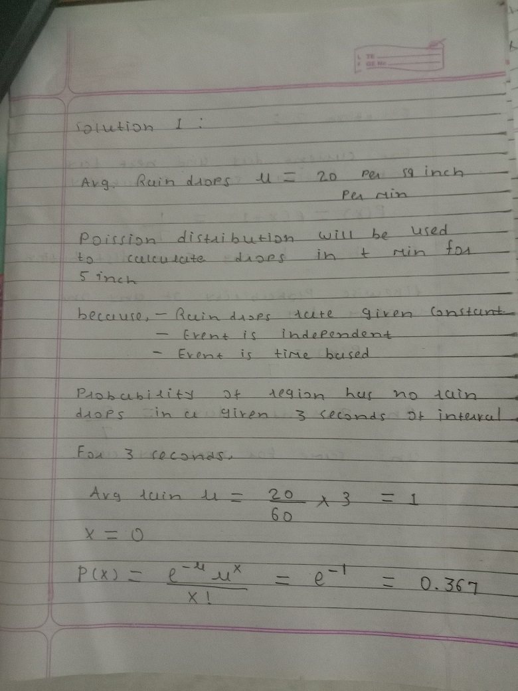
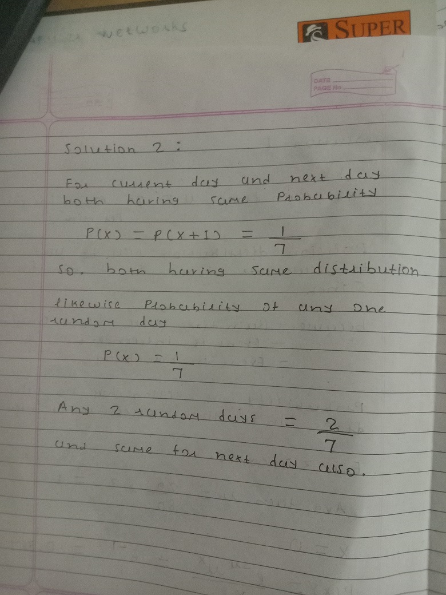

1. Raindrops are falling at an average rate of 20 drops per square inch per minute. What would be a reasonable distribution to use for the number of raindrops hitting a particular region measuring 5 inches2 in t minutes? Why? Using your chosen distribution, compute the probability that the region has no rain drops in a given 3 second time interval. A reasonable choice of distribution is P
2. Let X be a random day of the week, coded so that Monday is 1, Tuesday is 2, etc. (so X takes values 1, 2,..., 7, with equal probabilities). Let Y be the next day after X (again represented as an integer between 1 and 7). Do X and Y have the same distribution? What is P(X)
